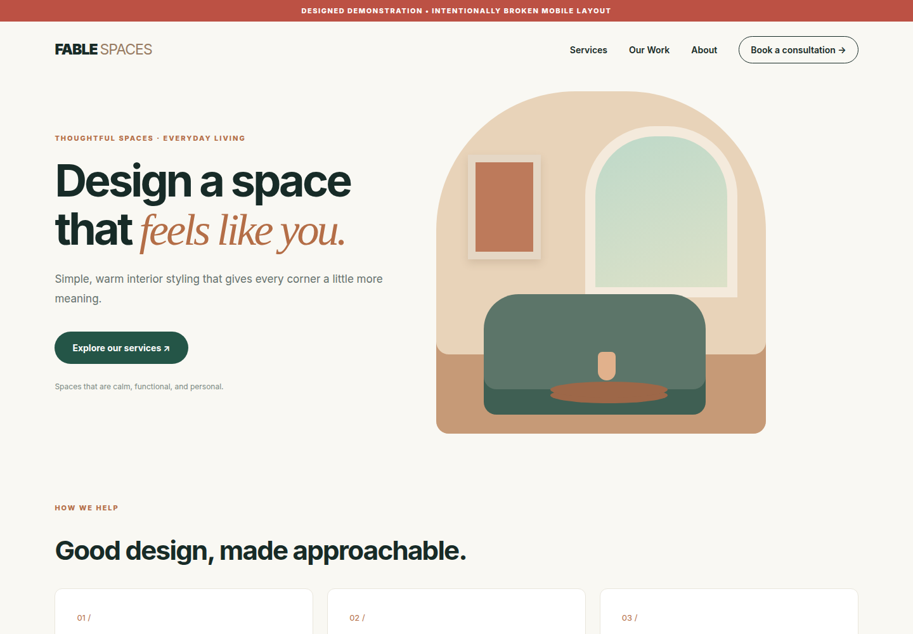
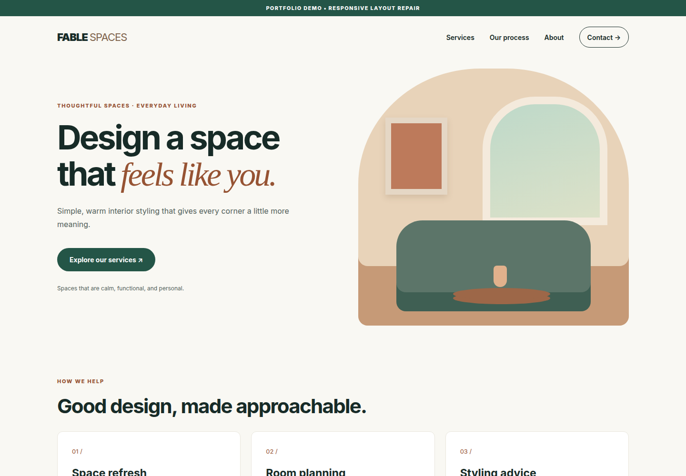

Let the layout breathe
The original enforced 1100–1120px minimum widths and fixed hero columns. Fluid containers, shrinkable grids and responsive type bring the content back into the viewport.
CASE STUDY 001 / RESPONSIVE REPAIR
Repairing a desktop-only layout so a fictional interior studio feels just as considered on a small screen.
01 / THE DIFFERENCE
Actual browser captures from these demos.
Both mobile views: 390 × 844 CSS pixels.
Fixed widths push navigation, text and artwork beyond the viewport.
Readable text, a working mobile menu and artwork that fits the screen.
Captured over local HTTP on 30 October 2026 using Chromium. These are viewport screenshots, not mockups; the broken version’s off-screen content stays off-screen. The original demo also retains its broken section links and placeholder contact action.


02 / THE REPAIR
A focused repair of an existing page,
without a framework or a full redesign.
The original enforced 1100–1120px minimum widths and fixed hero columns. Fluid containers, shrinkable grids and responsive type bring the content back into the viewport.
A mobile menu replaces the crowded desktop navigation. The repair adds keyboard focus recovery, Escape and outside-click dismissal, and navigation that still works without JavaScript.
Darker text improves contrast. Links reach the right sections. Enlarged text wraps, decorative artwork stays out of the accessibility tree, and spacing remains consistent.
03 / VERIFIED, WITH LIMITS
The repaired demo passed 88 browser assertions across 11 viewport widths, from 320 to 1920px, in the earlier local-file test run.
The case study and its demo copies were also checked over HTTP under a project subpath. These checks confirm behavior in the tested browser; they do not establish complete accessibility or device compatibility.
Not tested on physical devices, Safari, Firefox or a screen reader. No full axe audit, conversion study or performance score is claimed.
WEBSITE RESCUE / WHAT THIS SHOWS
This exercise demonstrates diagnosis, responsive CSS, accessible interaction and documented testing. It makes no claims about paid client work or business results.
Take a closer look